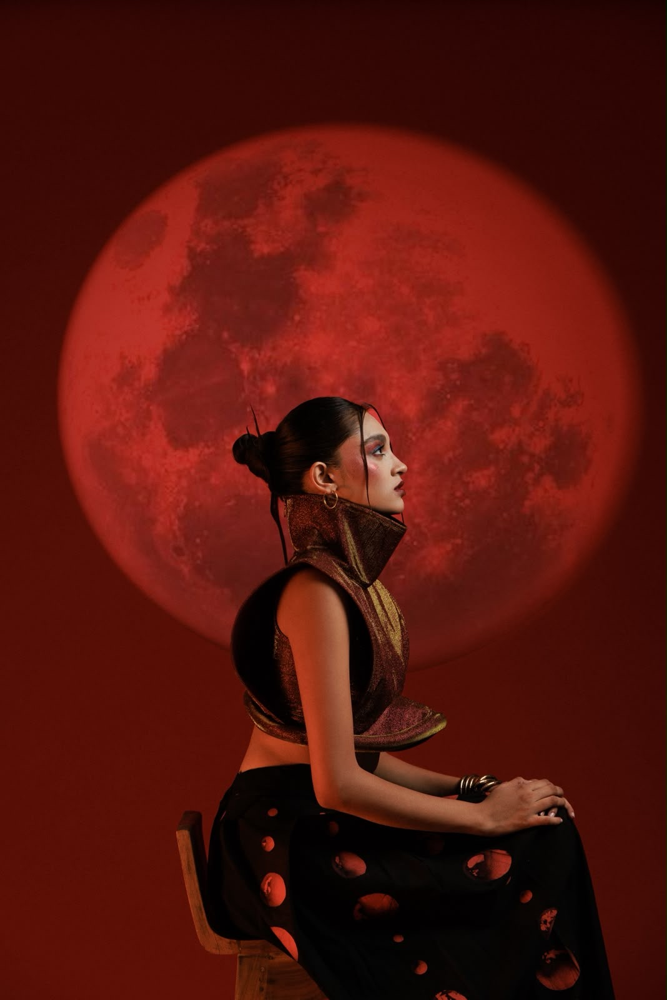
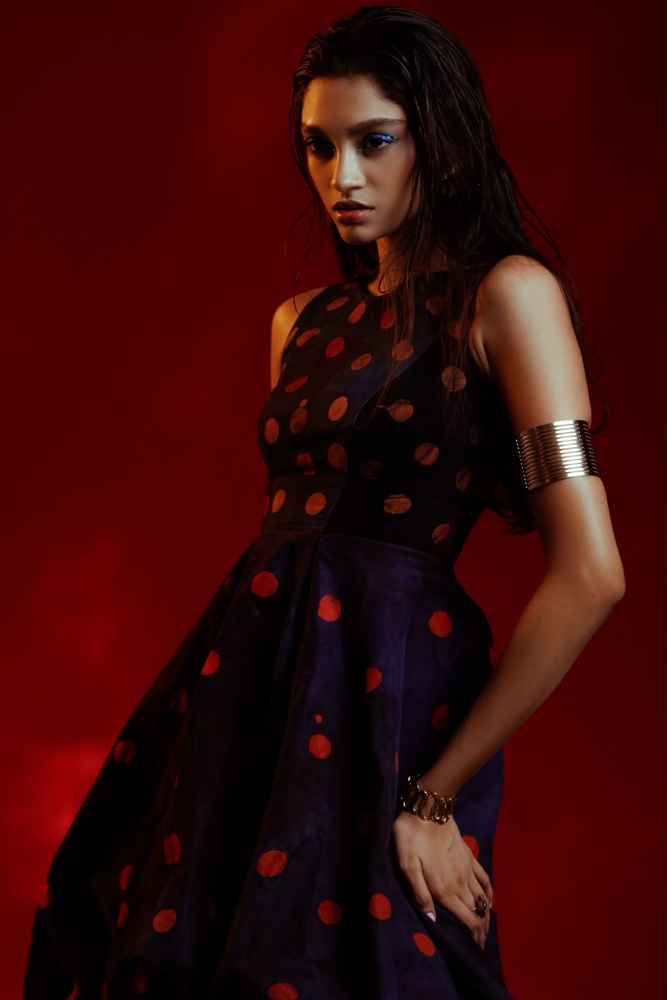
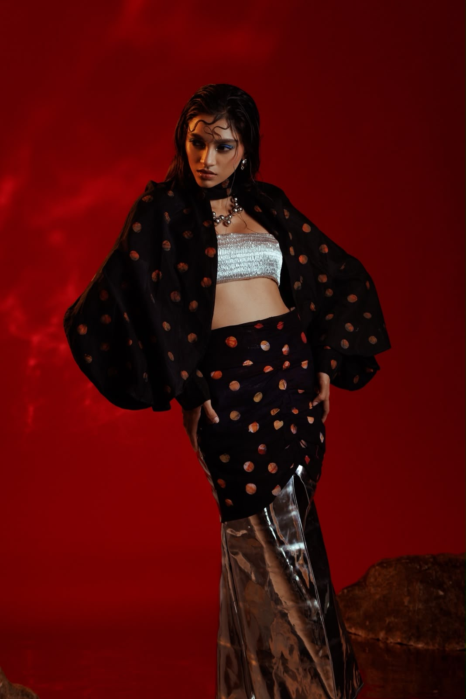
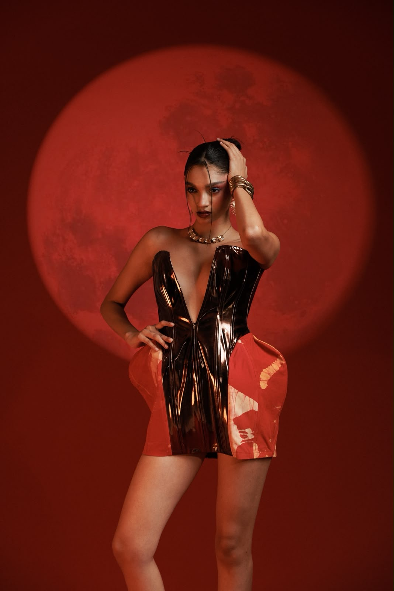
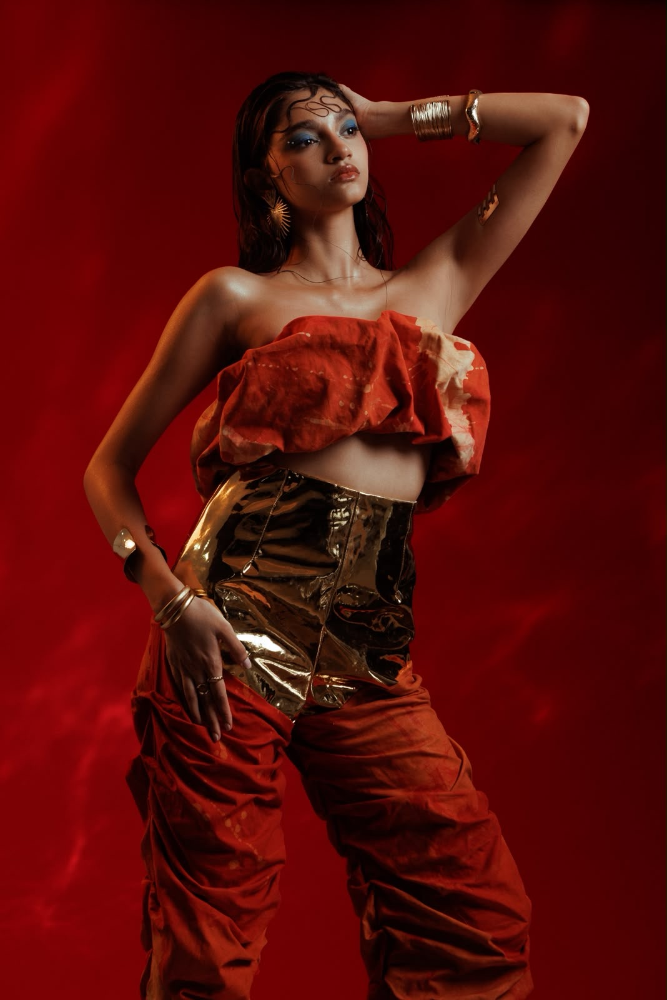

Heat
Where temperature becomes atmosphere, colour becomes energy.

Wear the Afterglow
A couture study in heat, light & shadow
55 Cancri e · 41 light-years
02 — Light
Born from an environment of extremes, Luminark explores the tension between incandescent light and absolute shadow.
Twelve pieces, cut and moulded by hand. Bonded vinyl holds the shape of heat. Hand-dyed silk carries the stain of it. Each look is built to read differently on the lit side and the dark side — the same garment, two states.
Atelier release — Autumn

03 — The World
A planet of extremes
Luminark takes its visual language from 55 Cancri e, an extreme super-Earth orbiting close to its star. Its world is defined by extraordinary heat, immense pressure and an environment shaped by intense irradiation.
We read it as a material brief rather than a picture: what a surface does when it is held at the edge of its own limit.
Where temperature becomes atmosphere, colour becomes energy.
An environment compressed by forces beyond the familiar.
Where intense light leaves an imprint long after the source disappears.
04 — The Planet
Tidally locked · 8.6× Earth mass
Day side ≈ 2,400 K
The TerminatorThe line where the lit side ends. Everything in this collection is cut to sit across it.
Select a point
05 — The Collection

Nothing in Luminark is printed to look like a planet. The surfaces are simply held at the point where they change.
Vinyl is heat-formed over a shell until it takes a permanent curve. Silk is dipped, dried and dipped again so the dye burns through in circles. The metalwork is beaten thin enough to move with the body.


06 — Heat
Vinyl is worked at temperature and cooled under weight. It keeps every crease it was given — the garment records its own making.
Dye is applied in discs, then lifted. What remains is not a print but a burn: an edge that is soft on one side and abrupt on the other.
07 — Shadow
Photographed in a single room against one wall, lit by one projected source. Scroll to walk the room.
Five looks · Scroll →
08 — Afterglow
Stefgo · Luminark · Statement
Luminark explores the moment where light becomes heat, structure becomes movement and darkness becomes a form of expression.
09 — Journal
10 — Stefgo
A contemporary couture house working at the meeting point of material, science and image.
Stefgo builds collections the way a study is built: choose a condition, then find out what fabric does inside it. Research comes first — a phenomenon, a material behaviour, a way light falls — and the garment follows from what that research turns up.
Every piece is cut and finished by hand in the atelier. Pieces are made in small numbers because the methods do not scale, and each is documented as part of the collection it belongs to.